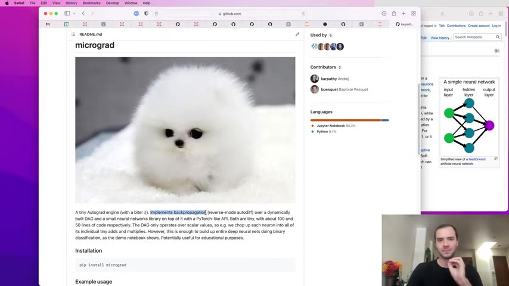
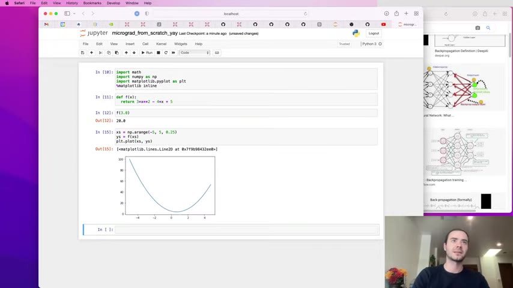
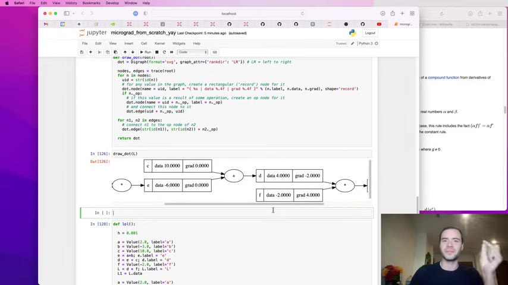
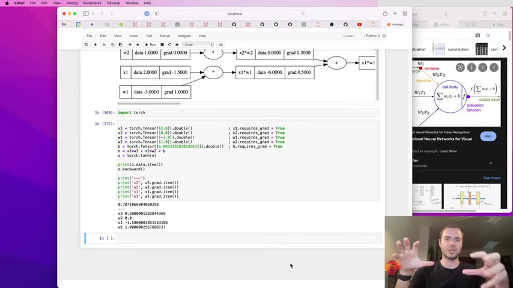
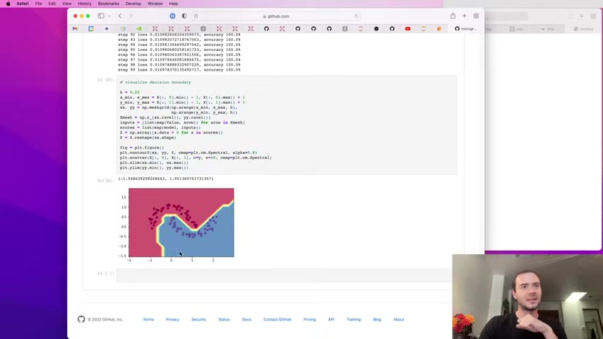

Karpathy builds a full neural-network training library from scratch — 150 lines of Python — then shows you every piece under the hood: the autograd engine, the expression graph, backpropagation, and the training loop.
Watch on YouTube
Karpathy introduces micrograd as a minimal autograd engine — "autograd" being short for automatic differentiation. His thesis: every neural network is just a mathematical expression, and training is differentiating the loss with respect to the weights and taking a step in the opposite direction. Everything beyond that — tensors, GPUs, batched ops — is efficiency.
"Fundamentally, all you need to train a neural net is a mathematical expression and back propagation." — Andre Karpathy

Before building any machinery, he establishes the intuition: a derivative measures how sensitive the output is to a tiny nudge in one input. He uses the numerical formula:
(f(x + ε) − f(x)) / ε where ε = 0.001
For a multi-variable function like d = a × b + c, each partial derivative tells you which input matters most:
∂d/∂a = b = −3 — a has a strong negative influence∂d/∂b = a = 2 — b pushes the output up∂d/∂c = 1 — c's influence is unit-sizeThe sign tells direction; the magnitude tells strength. That's all gradient descent needs.
The Value class wraps a scalar and tracks its provenance:
class Value:
def __init__(self, data, _children=(), _op=''):
self.data = data
self.grad = 0.0
self._prev = set(_children)
self._op = _op
Every + and * creates a new Value whose _prev points to its children and whose _op records the operation. This builds a directed acyclic graph of the forward pass — and the graph is all backpropagation needs to walk backward.
Python's operator overloading (__add__, __mul__, __rmul__, __pow__) means expressions read naturally: a * b + c.

val and grad — the gradient flowing backward through the chain rule.00:38:14Backpropagation starts at the output node with grad = 1.0 and walks backward through the graph:
∂(x·y)/∂x = yThe chain rule compounds: ∂L/∂x = (∂L/∂y) · (∂y/∂x). Each node only knows its local derivative; the global gradient arrives from downstream and gets multiplied through.
"Knowing the instantaneous rate of change of z with respect to y and y relative to x allows one to calculate the instantaneous rate of change of z relative to x as a product of those two rates of change." — Chain rule intuition, via Wikipedia (cited in-video)
The key insight: call backward() on every node in reverse topological order. The topological sort guarantees that when you visit a node, all of its children have already computed their gradients.
def backward(self):
topo = []
visited = set()
def build_topo(node):
if node not in visited:
visited.add(node)
for child in node._prev:
build_topo(child)
topo.append(node)
build_topo(self)
self.grad = 1.0
for node in reversed(topo):
node._backward()
The accumulation bug: if a variable appears more than once in the graph, = overwrites the gradient instead of adding to it. The fix is +=:
# Bug: self.grad = local * out.grad # overwrites on shared nodes
# Fix: self.grad += local * out.grad # accumulates correctly
You can implement operations at any granularity — from atomic +/* to a bundled tanh — as long as you know the forward and backward formulas:
tanh(x) — backward: (1 − tanh²(x)) · gradexp(x) — backward: exp(x) · gradx ** k — backward: k · x^(k-1) · grad (power rule)Division is just multiplication by x⁻¹: a / b = a * b ** (-1).
"As long as you know how to differentiate through any one function … that's all you need."
micrograd is intentionally designed to mirror the PyTorch API using single-element tensors:
| micrograd | PyTorch |
|---|---|
Value(2.0) |
torch.tensor(2.0, requires_grad=True) |
a + b |
a + b (identical) |
o.backward() |
o.backward() (identical) |
o.data |
o.item() |
a.grad |
a.grad (identical) |
The only difference is scale: production libraries use n-dimensional tensors to exploit GPU parallelism. The math doesn't change.

Building a neural net from the ground up:
class Neuron:
def __call__(self, x):
act = sum(w_i * x_i for w_i, x_i in zip(self.w, x)) + self.b
return act.tanh()
class Layer:
def __call__(self, x):
return [n(x) for n in self.neurons]
class MLP:
def __call__(self, x):
for layer in self.layers:
x = layer(x)
return x[-1]
Training loop (gradient descent, 100 steps, lr = 0.05):
for k in range(100):
yhat = n(x) # forward
loss = sum((ygt - yhat_i)**2 for ygt, yhat_i in zip(y, yhat)) # MSE
n.zero_grad() # ← critical
loss.backward() # backward
for p in n.parameters():
p.data -= 0.05 * p.grad # update
Loss drops from ~7 → ~0.04 → near-zero. The network learns to classify the four training examples.
Karpathy catches a real bug on camera: forgetting to call zero_grad() before each backward pass. Gradients accumulate across iterations (+= is additive by design), so the second forward pass starts with stale gradient values from the first.
The funny part: on this trivially simple problem, the corrupted gradients accidentally made convergence faster — the network happened to land in a good spot. On any real problem, this bug breaks training silently.
"You forgot to zero_grad before that backward."

The complete picture:
micrograd distills this to scalar operations for clarity. GPT and every other modern model work on the exact same principles — just with billions of parameters, cross-entropy loss, and tensors on GPUs.
+=, never =:::